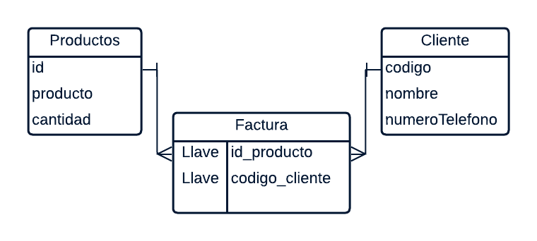
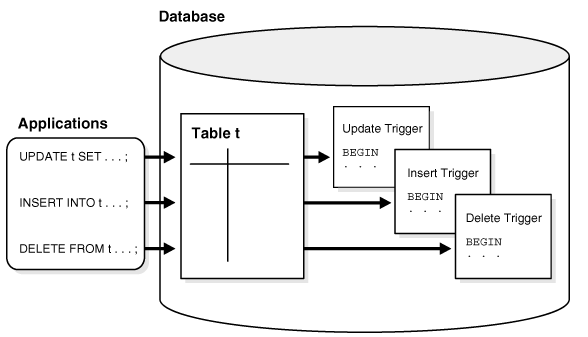

INICIO
Introducción a Bases de Datos
Las bases de datos son sistemeas utilizados para almacenar y organizar, consultar y administrar información de manerea estructurada.
Acutalmente las bases de datos son fundamentales en el desarrollo de aplicaciones empresariales o sistemas acdemicos, plataformas web, entidades finacieras y hospitales, permitiendo un acceso eficiente y seguro a la información.
En este recurso educativo se abordarán los conceptos fundamentales de bases de datos, SQL, procedimientos almacenados, triggers y transacciones, proporcionando una base sólida para el desarrollo de habilidades en el manejo de datos.

Bases de datos relacionales
Una bases de datos es un conjunto de datos organizados de informacion que se almacena y puede ser consultada, modificada y administrada mediante un sistema especializado..
Las Bases de Datos nos permiten gestionar grandes volúmenes de información de manera eficiente y segura.

> El moedelo relacional organiza los datos en tablas interrelacionadas, cada tabla representa una entidad y las relaciones se establecen mediante claves primarias y foráneas.
Ejemplo
| ID | Nombre | Correo | Teléfono |
|---|---|---|---|
| 1 | Juan Pérez | juan@email.com | 3000000000 |
| 2 | María López | maria@email.com | 3010000000 |
SQL
SQL (Structured Query Language) es un lenguaje de programación utilizado para gestionar y manipular bases de datos relacionales. Permite realizar consultas, insertar, actualizar y eliminar datos, así como crear y modificar estructuras de bases de datos.
SQL es fundamental para interactuar con bases de datos y es ampliamente utilizado en aplicaciones empresariales y sistemas de información.
Operaciones Básicas SQL
- SELECT: Recupera datos de una o más tablas.
- INSERT: Agrega nuevos registros a una tabla.
- UPDATE: Modifica registros existentes en una tabla.
- DELETE: Elimina registros de una tabla.
- CREATE TABLE: Crea una nueva tabla en la base de datos.
- ALTER TABLE: Modifica la estructura de una tabla existente.
- DROP TABLE: Elimina una tabla de la base de datos.
Consultas Avanzadas
Las consultas avanzadas en SQL permiten realizar operaciones más complejas y obtener información específica de las bases de datos. Estas consultas pueden incluir filtros, agrupaciones, ordenamientos y combinaciones de tablas.
JOIN
El operador JOIN se utiliza para combinar filas de dos o más tablas basándose en una relación entre ellas.
SELECT clientes.nombre, pagos.fecha
FROM clientes
INNER JOIN pagos
ON clientes.id = pagos.cliente_id;
Tipos de JOIN
- INNER JOIN
- LEFT JOIN
- RIGHT JOIN
- FULL JOIN
GROUP BY
GROUP BY permite agrupar registros que tienen valores similares en determinadas columnas.
SELECT ciudad, COUNT(*)
FROM clientes
GROUP BY ciudad;
Funciones de agregación
- COUNT()
- SUM()
- AVG()
- MAX()
- MIN()
HAVING
SELECT ciudad, COUNT(*)
FROM clientes
GROUP BY ciudad
HAVING COUNT(*) > 5;
Subconsultas
Video demostrativo y profundizacion sobre subconsultas
Procedimientos almacenados y funciones
Los procedimientos almacenados y las funciones son bloques de código SQL que se almacenan en la base de datos y se pueden ejecutar para realizar tareas específicas. Los procedimientos pueden aceptar parámetros y realizar operaciones complejas, mientras que las funciones devuelven un valor.
Ejemplo de procedimiento almacenado
CREATE PROCEDURE consultarClientes()
BEGIN
SELECT *
FROM clientes;
END;
Ventajas de los procedimientos almacenados
- Reutilización de código
- Mejora del rendimiento
- Seguridad y control de acceso
- Mantenimiento más sencillo
- Permiten centralizar la lógica de negocio
Funciones
Las funciones almacenada permite realizar operaciones y devolver un valor específico.
Procedimientos y parámetros
CREATE PROCEDURE buscarCliente(
IN identificador INT
)
BEGIN
SELECT *
FROM clientes
WHERE id = identificador;
END;
Los procedimientos almacenados y las funciones permiten reutilizar operaciones y llevar parte de la logica al sistema gestor de la bases de datos.
Triggers
Los triggers, tambien conocidos como disparadores, es un mecanismo que permite ejecutar automáticamente un conjunto de instrucciones en respuesta a ciertos eventos en la base de datos.

Eventos que pueden desencadenar un trigger
- INSERT: Se activa cuando se inserta un nuevo registro en una tabla.
- UPDATE: Se activa cuando se actualiza un registro existente en una tabla.
- DELETE: Se activa cuando se elimina un registro de una tabla.
Ejemplo
CREATE TRIGGER registrar_cambio
AFTER UPDATE ON clientes
FOR EACH ROW
INSERT INTO historial
(fecha, descripcion)
VALUES
(NOW(), 'Cliente actualizado');
Aproximacion un video para profundizar el tema de triggers
Actividades
Las siguientes actividades permiten comprobar los conocimientos adquiridos durante las lecturas.
Actividad 1: Conceptos básicos
Actividad 2: SQL
Actividad 3: Reto SQL
Escribe una consulta SQL que permita obtener los clientes mayores de 21 años.
| ID | Nombre | Edad |
|---|---|---|
| 1 | Juan | 20 |
| 2 | Laura | 25 |
| 3 | Carlos | 30 |
Comprobar respuesta
Una respuesta correcta sería:
SELECT *
FROM clientes
WHERE edad > 21;
✓ Correcto: la condición edad > 21 permite obtener los clientes cuya edad es mayor de 21 años.
Autor
Nombre: Jesus Vega Diaz
Correo: vegadiazjesus08@gmail.com
Año: 2026